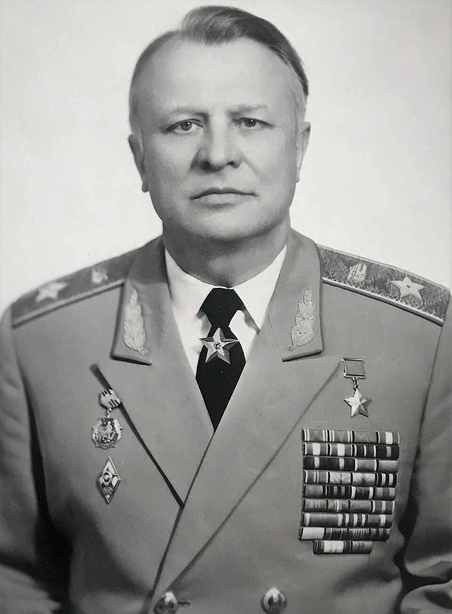

Лосик Олег Александрович
Олег Александрович Лосик был известным военачальником, Героем Советского Союза и Маршалом бронетанковых войск. В Минске его именем названа улица, и это не случайно. Главная причина — его огромный вклад в освобождение нашего города от фашистских захватчиков во время Великой Отечественной войны. В июле 1944 года во время знаменитой операции «Багратион» Олег Лосик командовал танковой бригадой. Его танкисты проявили невероятное мужество: они смогли прорвать оборону врага и 3 июля 1944 года одними из первых ворвались в Минск, освободив город. Именно за это сражение, за умелое командование и личный героизм уже на следующий день, 4 июля 1944 года, ему было присвоено высокое звание Героя Советского Союза. Позже за свои заслуги он стал Почётным жителем города Минска. Чтобы сохранить память о храбром военачальнике, в 2014 году столичные власти приняли решение назвать в его честь новую улицу. Сегодня улица Маршала Лосика во Фрунзенском районе — это дань уважения человеку, который подарил Минску мир и свободу.